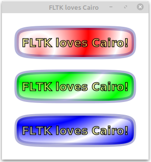
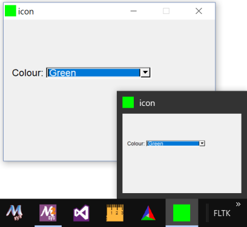
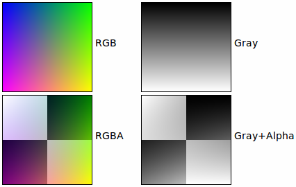

- Generated by
 1.13.2
1.13.2
|
FLTK 1.4.4
|
The FLTK distribution contains over 60 sample applications written in, or ported to, FLTK. If the FLTK archive you received does not contain either an 'examples' or 'test' directory, you can download the complete FLTK distribution from https://www.fltk.org/software.php .
Most of the example programs were created while testing a group of widgets. They are not meant to be great achievements in clean C++ programming, but merely a test platform to verify the functionality of the FLTK library.
Note that extra example programs are also available in an additional 'examples' directory, but these are NOT built automatically when you build FLTK, unlike those in the 'test' directory shown below.
adjuster shows a nifty little widget for quickly setting values in a great range.animated shows a window with an animated square that shows drawing with transparency (alpha channel).arc demo explains how to derive your own widget to generate some custom drawings. The sample drawings use the matrix based arc drawing for some fun effects.ask shows some of FLTK's standard dialog boxes. Click the correct answers or you may end up in a loop, or you may end up in a loop, or you... .blocks is also a good example for the Mac OS X specific bundle format.boxtype gives an overview of readily available boxes and frames in FLTK. More types can be added by the application programmer. When using themes, FLTK shuffles boxtypes around to give your program a new look.browser shows the capabilities of the Fl_Browser widget. Important features tested are loading of files, line formatting, and correct positioning of the browser data window.button test is a simple demo of push-buttons and callbacks.buttons shows a sample of FLTK button types.cairo_test shows a sample of drawing with Cairo in an Fl_Cairo_Window. This program can only be built completely if FLTK was configured with Cairo support. It displays a message box if Cairo support was not included.checkers shows how to convert a VT100 text-terminal based program into a neat application with a graphical UI. Check out the code that drags the pieces, and how the pieces are drawn by layering. Then tell me how to beat the computer at Checkers.clipboard demo can be used to view the contents of the system clipboard, either text or image contents. Currently an image is preferred if the clipboard contains both formats. Images can be stored as PNG files so screenshots can be stored on disk with this little FLTK demo program.clock demo shows two analog clocks. The innards of the Fl_Clock widget are pretty interesting, explaining the use of timeouts and matrix based drawing.colbrowser runs only on X11 systems. It reads /usr/lib/X11/rgb.txt to show the color representation of every text entry in the file. This is beautiful, but only moderately useful unless your UI is written in Motif.color_chooser gives a short demo of FLTK's palette based color chooser and of the RGB based color wheel.cube demo shows the speed of OpenGL. It also tests the ability to render two OpenGL buffers into a single window, and shows OpenGL text.CubeView shows how to create a UI containing OpenGL with FLUID.cursor demo shows all mouse cursor shapes that come standard with FLTK. The fgcolor and bgcolor sliders work only on few systems (some version of Irix for example).curve draws a nice Bézier curve into a custom widget. The points option for splines is not supported on all platforms.test directory. The menu tree can be changed by editing test/demo.menu.doublebuffer demo shows the difference between a single buffered window, which may flicker during a slow redraw, and a double buffered window, which never flickers, but uses twice the amount of RAM. Some modern OS's double buffer all windows automatically to allow transparency and shadows on the desktop. FLTK is smart enough to not tripple buffer a window in that case.editor test is almost a full application, showing custom syntax highlighting and dialog creation. See chapter Designing a Simple Text Editor for a tutorial about creating this program.fast_slow shows how an application can use the Fl_Widget::when() setting to receive different kinds of callbacks.file_chooser is the result of many iterations, trying to find a middle ground between a complex browser and a fast light implementation.fonts shows all available text fonts on the host system. If your machine still has some pixmap based fonts, the supported sizes will be shown in bold face. Only the first 256 fonts will be listed.forms is an XForms program with very few changes. Search for "fltk" to find all changes necessary to port to fltk. This demo shows the different boxtypes. Note that some boxtypes are not appropriate for some objects.fractals shows how to mix OpenGL, Glut and FLTK code. FLTK supports a rather large subset of Glut, so that many Glut applications compile just fine.gl_overlay shows OpenGL overlay plane rendering. If no hardware overlay plane is available, FLTK will simulate it for you.glpuzzle test shows how most Glut source code compiles easily under FLTK.hello: Hello, World. Need I say more? Well, maybe. This tiny demo shows how little is needed to get a functioning application running with FLTK. Quite impressive, I'd say.help_dialog displays the built-in FLTK help browser. The Fl_Help_Dialog understands a subset of html and renders various image formats. This widget makes it easy to provide help pages to the user without depending on the operating system's html browser.icon demonstrates how an application icon can be set from an image. This icon should be displayed in the window bar (label), in the task bar, and in the task switcher (Windows: Alt-Tab). This feature is platform specific, hence it is possible that you can't see the icon. On Unix/Linux (X11) this can even depend on the Window Manager (WM).iconize demonstrates the effect of the window functions hide(), iconize(), and show().image demo shows how an image can be created on the fly. This generated image contains an alpha (transparency) channel which lets previous renderings 'shine through', either via true transparency or by using screen door transparency (pixelation).inactive tests the correct rendering of inactive widgets. To see the inactive version of images, you can check out the pixmap or image test.input program also tests various settings of Fl_Input::when().input_choice tests the latest addition to FLTK1, a text input field with an attached pulldown menu. Windows users will recognize similarities to the 'ComboBox'. input_choice starts up in 'plastic' scheme, but the traditional scheme is also supported.keyboard test can be used to check the return values of Fl::event_key() and Fl::event_text(). It is also great to see the modifier buttons and the scroll wheel at work. Quit this application by closing the window. The ESC key will not work.label demo shows alignment, clipping, and wrapping of text labels. Labels can contain symbols at the start and end of the text, like @FLTK or @circle uh-huh @square.line_style. Not all platforms support all line styles.mandelbrot shows two advanced topics in one test. It creates grayscale images on the fly, updating them via the idle callback system. This is one of the few occasions where the idle callback is very useful by giving all available processor time to the application without blocking the UI or other apps.menubar tests many aspects of FLTK's popup menu system. Among the features are radio buttons, menus taller than the screen, arbitrary sub menu depth, and global shortcuts.message pops up a few of FLTK's standard message boxes.minimum test program verifies that the update regions are set correctly. In a real life application, the trail would be avoided by choosing a smaller label or by setting label clipping differently.native-filechooser program invokes the platform specific file chooser, if available (see Fl_Native_File_Chooser widget).navigation demonstrates how the text cursor moves from text field to text field when using the arrow keys, tab, and shift-tab.offscreen shows how to draw into an offscreen image and display the offscreen image in the program window.output shows the difference between the single line and multi line mode of the Fl_Output widget. Fonts can be selected from the FLTK standard list of fonts.overlay test app shows how easy an FLTK window can be layered to display cursor and manipulator style elements. This example derives a new class from Fl_Overlay_Window and provides a new function to draw custom overlays.pack test program demonstrates the resizing and repositioning of children of the Fl_Pack group. Putting an Fl_Pack into an Fl_Scroll is a useful way to create a browser for large sets of data.pixmap_browser tests the shared-image interface. When using the same image multiple times, Fl_Shared_Image will keep it only once in memory.preferences in the morning, but sometimes I just can't remember a thing. This is where the Fl_Preferences come in handy. They remember any kind of data between program launches.radio tool was created entirely with FLUID. It shows some of the available button types and tests radio button behavior.resizebox shows some possible ways of FLTK's automatic resize behavior.rotated_text shows how text can be rotated, i.e. drawn in any given angle. This demo is device specific, for instance it works under X11 only if configured with Xft.resize demo tests size and position functions with the given window manager.scroll shows how to scroll an area of widgets, one of them being a slow custom drawing. Fl_Scroll uses clipping and smart window area copying to improve redraw speed. The buttons at the bottom of the window control decoration rendering and updates.shape is a very minimal demo that shows how to create your own OpenGL rendering widget. Now that you know that, go ahead and write that flight simulator you always dreamt of.subwindow demo tests messaging and drawing between the main window and 'true' sub windows. A sub window is different to a group by resetting the FLTK coordinate system to 0, 0 in the top left corner. On Win32 and X11, subwindows have their own operating system specific handle.symbols are a speciality of FLTK. These little vector drawings can be integrated into labels. They scale and rotate, and with a little patience, you can define your own. The rotation number refers to 45 degree rotations if you were looking at a numeric keypad (2 is down, 6 is right, etc.).table demo shows the features of the Fl_Table widget.tabs tool was created with FLUID. It tests correct hiding and redisplaying of tabs, navigation across tabs, resize behavior, and no unneeded redrawing of invisible widgets.tabs application shows the Fl_Tabs widget on the left and the Fl_Wizard widget on the right side for direct comparison of these two panel management widgets.threads shows how to use Fl::lock(), Fl::unlock(), and Fl::awake() in secondary threads to keep FLTK happy. Although locking works on all platforms, this demo is not available on every machine.tile tool shows a nice way of using Fl_Tile. To test correct resizing of subwindows, the widget for region 1 is created from an Fl_Window class.tiled_image demo uses a small image as the background for a window by repeating it over the full size of the widget. The window is resizable and shows how the image gets repeated.tree demo shows the features of the Fl_Tree widget.twowin program tests focus transfer from one window to another window.unittests exercises all of FLTK's drawing features (e.g., text, lines, circles, images), as well as scrollbars and schemes.utf8 shows all fonts available to the platform that runs it, and how each font draws each of the Unicode code points ranging between U+0020 and U+FFFF.valuators shows all of FLTK's nifty widgets to change numeric values.windowfocus shows a very special case when a new window is shown while the focus stays in the original window.FLUID is not only a big test program, but also a very useful visual UI designer. Many parts of FLUID were created using FLUID. Check out the FLUID User Manual and the tutorials that come with it at https://www.fltk.org/documentation.php .This chapter contains a few selected images of the test and example applications listed above. It is not meant to be complete or a full reference. The reason some images are included here is to show how the display should look when running the example programs.
cairo_test demo program shows three shiny buttons drawn with Cairo in an Fl_Cairo_Window.
icon program lets you set the program icon from an image (here an Fl_RGB_Image).

| [Prev] Software License | [Index] | Frequently Asked Questions [Next] |